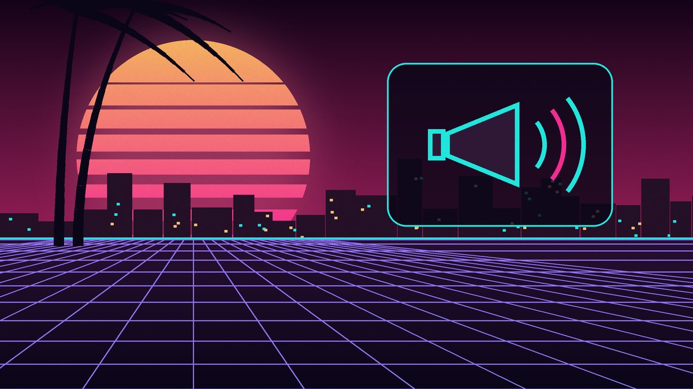

3.790 millones de dólares el primer día: qué cifras del estreno de GTA 6 son oficiales y cuáles son estimaciones
Rockstar y Take-Two anunciaron 3.790 millones de dólares de gasto el día del estreno y 32,5 millones de unidades vendidas antes de salir. Por su lado, la consultora Sensor Tower calculó 24,58 millones de copias y 2.360 millones. No se contradicen, porque no miden lo mismo, y ninguna de las dos es una cifra auditada.
Por Redacción Golpe Diario · Publicado el

Qué ha pasado
Lo que ha anunciado la empresa. Take-Two Interactive y Rockstar hicieron público el 20 de noviembre que el día del estreno se gastaron 3.790 millones de dólares en el juego, y que ningún lanzamiento de ninguna forma de entretenimiento ha arrancado más alto. The Escapist pone el matiz que importa: eso son ventas al público, el dinero que pusieron los compradores en las tiendas, no lo que le llega a la editora, porque plataformas como Sony y Microsoft se quedan una parte de cada venta. Y es la propia estimación de Take-Two, no una cifra cerrada.
Los 32,5 millones de unidades son de antes del estreno. The Escapist lo dice con todas las letras: se vendieron antes de que el juego saliera a la venta, es decir, reservas. La agencia AP recoge que Rockstar lo presenta como un récord. Para hacerse una idea de lo que es ese número, GamesRadar+ recuerda que Elden Ring tardó tres años en vender 30 millones.
La estimación de fuera. Sensor Tower, una consultora de datos de mercado, calculó 24,58 millones de copias y unos 2.360 millones de dólares en el primer día, y así lo publicó Reuters. Revista Mercado saca la cuenta: sale un precio medio de unos 96 dólares por copia, con la edición estándar a 79,99 y la Ultimate a 99,99. La agencia EFE añade el reparto por consola que dio Sensor Tower, un 75 % en PlayStation y un 25 % en Xbox, y recordaba ese mismo día que Take-Two aún no había publicado nada oficial.
Por qué no cuadran los dos números. No miden lo mismo. La de Rockstar es su propia estimación del gasto en tiendas de todo el mundo al cerrar el jueves, el día del estreno, según explicó la empresa a AP; la de Sensor Tower es el cálculo de una consultora, publicado el viernes. Y conviene no sumar los 32,5 millones de reservas con los 24,58 millones del primer día: son dos recuentos distintos, de fechas distintas y de fuentes distintas.
Las comparaciones que se están usando. AP recuerda que GTA 5 necesitó tres días para llegar a los 1.000 millones de dólares en 2013, mientras que Fox Business cifra su primer día en unos 800 millones, casi cinco veces menos que lo anunciado ahora. Ese mismo medio compara los 3.790 millones con los cerca de 2.900 millones que recaudó Vengadores: Endgame en toda su vida en los cines, y recoge que Rockstar presume de un 99 en Metacritic.
Lo que no hay. Fox Business señala que Rockstar no ha anunciado ni la versión de PC ni cuándo llega la parte en línea, y que los analistas del sector las esperan en 2027. Eso último es una expectativa de analistas, no una fecha de Rockstar.
Qué significa para ti
- Si ves por ahí una cifra de más de 50 millones de copias, es alguien sumando las reservas con las ventas del primer día. Son recuentos distintos.
- Los 3.790 millones son lo que gastó la gente, no lo que gana Rockstar: las tiendas digitales se llevan parte de cada venta.
- Las dos cifras, la de Rockstar y la de Sensor Tower, son estimaciones. Los números auditados no llegan hasta que Take-Two presente resultados.
- No esperes la versión de PC ni la parte en línea por lo que leas en redes: Rockstar no ha dado fecha de ninguna de las dos.
Contrastado con: The Escapist · ABC News · Fox Business · Revista Mercado · El Mostrador · GamesRadar+
Sigue leyendo
Rockstar explica cómo ha construido a cada vecino de Leonida para que no parezca un maniquí
Una entrevista de IGN a varios responsables de Rockstar North, recogida por otros medios especializados, destapa el trabajo que hay detrás de la gente que se cruza por la calle en GTA 6: más animaciones que en cualquier otro juego de la saga, un equipo dedicado solo a sus vidas y una norma que obliga a cada uno a tener su propia historia, aunque el jugador no la vea nunca entera.
Keith Richards se hace DJ de blues en GTA 6, junto a Buddy Guy
El guitarrista de los Rolling Stones presenta su propia emisora dentro del juego, Gloriana Blues Radio, en compañía de la leyenda del blues Buddy Guy, y pone de su cosecha una versión de un clásico de Jimmy Reed.
Sam Houser habla en el estreno de GTA 6: «hemos intentado crear una experiencia que supere vuestras expectativas»
El presidente y cofundador de Rockstar, que casi nunca da declaraciones, mandó un texto a un medio mientras el juego se desbloqueaba por regiones. Resumimos lo que dice, con sus frases más claras citadas y atribuidas, y lo único que deja claro sobre el final de la historia.